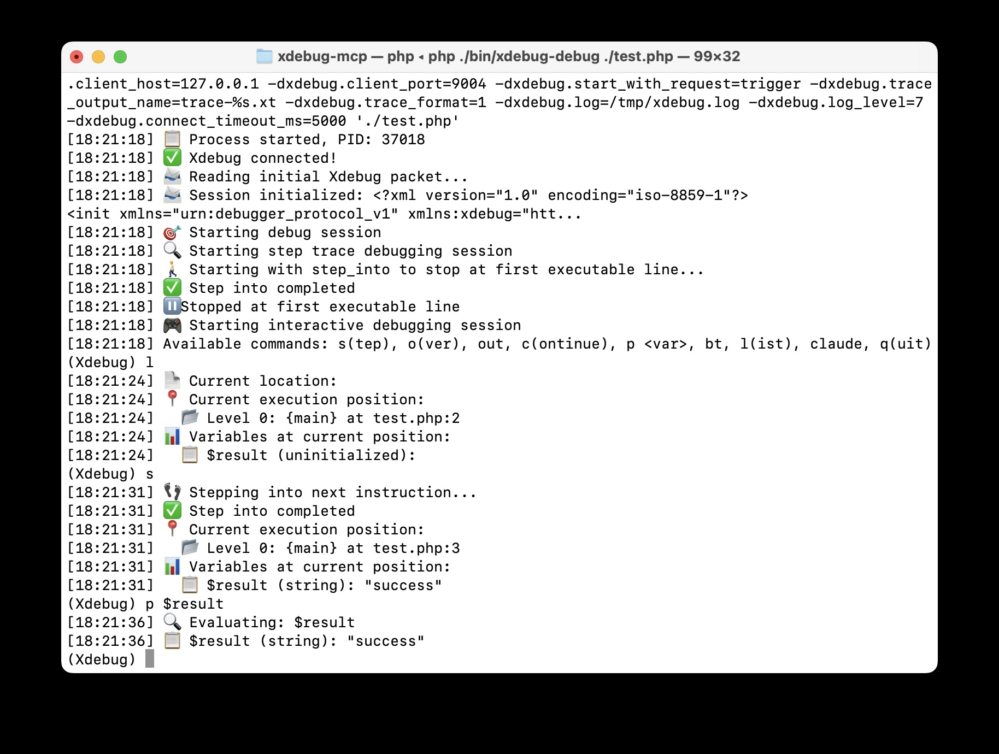

var_dump()からxdebug_start_trace()へ
AI支援開発におけるパラダイムシフト
Claude CodeがPHPをデバッグする様子を見ていた時:
var_dump($variable); // AIがこれを追加
// テスト実行、結果分析
var_dump($other); // AIがもう一つ追加
// 最初のを削除、3つ目を追加...
var_dump($result); // 繰り返し...削除もします...
😱
「最先端のAIが1995年のようにデバッグしている」
我々は探偵に📷 現場写真だけで犯罪を解決するよう求めていた。
提示物:
しかし何が起きてたかは見せてない！📹📺🎥
「AIは常にデータに飢えている。」
AIが本当に必要とするもの:
| 以前（静的解析） | 以後（実行時インテリジェンス） |
|---|---|
|
var_dump() AIがコード構造を検査 → 推測を行う → プリントデバッグを提案 |
xdebug_start_trace() AIが実行トレースを分析 → 正確な障害点を特定 → 的確な修正を提供 |
// 複数のデバッグ試行
// コード変更、テスト、繰り返し...# 条件ブレークポイント: 問題発生時に停止
./vendor/bin/xdebug-debug --break='checkout.php:89:$total<0' --steps=50 --exit-on-break -- php checkout.php
# AIが分析して報告:
"発見: $50割引が$30のカートに適用され = -$20の合計
修正: removeItem()後に$this->recalculateDiscount()を追加"# 1. GitHubからクローン
git clone https://github.com/koriym/xdebug-mcp.git
cd xdebug-mcp && composer install
# 2. 簡単なテストを作成
echo '<?php
$result = "success";
if (rand(0,1)) { $result = null; }
echo $result;
?>' > test.php
# 3. AIに実行を分析させる
./vendor/bin/xdebug-trace --context="\$resultがnullになる理由を発見" -- php test.php
# 4. 完全なAI統合を有効化
claude mcp add xdebug php "$(pwd)/vendor/bin/xdebug-mcp"| 課題 | 👤 IDE使いの人間 | 🤖 実行時データ持ちのAI |
|---|---|---|
| 間欠的バグ | ブレークポイント設定、捕まえられることを期待 | 条件ブレークポイント設定、全発生を捕獲 |
| 複雑なフロー | 手動ステップ実行、詳細を見落とし | 完全な実行トレース処理、全パターン特定 |
| 競合状態 | 捕獲はほぼ不可能 | 時間ベース条件設定、正確なタイミング捕獲 |
📷 写真撮影
（断片的スナップショット）
// ステップ1: ブレークポイント設定
// ステップ2: ブレークポイントまで実行（📷 スナップショット）
// ステップ3: $user変数をチェック
// ステップ4: 関数にステップイン
// ステップ5: もう一つのスナップショット（📷）
// ステップ6: 別の変数をチェック...
// → 複数の写真、ストーリーが欠けている🎥 動画撮影
（完全記録）
# 単一コマンドで全体を記録
./vendor/bin/xdebug-debug --break='script.php:10:$user==null' --steps=300 --exit-on-break -- php script.php
# AIが完全な🎥映像を見る:
# ステップ1: $id = getUserId() → 42を返す
# ステップ2: $user = findUser($id) → DBクエリ成功
# ステップ3: validateUser($user) → 検証通過
# ステップ4: $permissions = getPermissions($user) → nullを返す
# ステップ5: checkAccess($permissions) → クラッシュ！nullアクセスAIが完全なコンテキストを処理 → 人間に洞察を提供
AIは人間を圧倒する複雑さを処理できる
「トレースファイルです。何を意味するか解釈してください。」
スキーマ = 意味 + データ構造 + AIガイドンス
2 1 0 0.000489 401872 testFunction 1 test.php 35 2 $a=null $b=10
2 1 1 0.000521 403216
2 1 R array(3) { [0]=>int(1) [1]=>int(2) [2]=>int(3) }{
"trace_file": "/tmp/trace.1034012359.xt",
"total_lines": 847,
"unique_functions": 23,
"max_call_depth": 12,
"database_queries": 15,
"specification": "https://xdebug.org/docs/trace",
"analysis_context": "データベースクエリを含むユーザー認証フローのデバッグ",
"content": ["2\t1\t0\t0.000489\t401872\ttestFunction\t1\t\ttest.php\t35\t2\t$a=null $b=10"]
}AIはデータを解析するだけでなく、使命を知っている
「フォーマットXのデータです。何が重要かは頑張って解釈してください。」
「完全な分析指示を組み込んだデータです。」
AIに実行時データを与えているだけではなく
そのデータを効果的に使用する方法の知識もAIに与えている。
人間とAIの理解ギャップを取り除く
AIを高度な補完エンジンとして扱い続けることもできる...
または完全な透明性を通じてパートナーにもなれる
コードを共有するだけでなく、開発コンテキスト全体を共有する。
どんな開発になるんだろうと考えた
// コードを汚染しなければならない
if ($userId === 0) {
var_dump($userData, $permissions, $sessionData);
error_log("Debug: User ID 0 detected");
// 本番環境で削除し忘れるリスク...
}問題: コード汚染、本番リスク、手動クリーンアップ
# 条件満たされるまで静かに待機、その後トレース開始
./vendor/bin/xdebug-debug --break='User.php:85:$userId==0' --steps=100 --exit-on-break -- php app.php
# 完全実行履歴取得: どうやって$userId=0になったのか？
# AIが条件に至る完全実行トレースを分析メリット: コード変更なし、完全コンテキスト、安全
# 条件固有の問題を確実に捕獲
./vendor/bin/xdebug-debug --break='DataProcessor.php:42:empty($items)' --steps=200 --exit-on-break -- php batch.php
# AI分析で根本原因特定
# 空配列条件への完全パス分析# マイクロ秒精度パフォーマンスプロファイリング
./vendor/bin/xdebug-profile --context="API性能解析" -- php slow_api.php
# AIがボトルネック分析と最適化提案を提供
# 結果: ボトルネック特定付き完全性能プロファイル「発見: fetchUser()が847回呼出（実行時間の72%）。42行目にキャッシュ追加。」
AIが見るもの: 関数呼び出し回数、実行時間、メモリ使用パターン
# 完全コンテキスト付きAI最適化デバッグ
./vendor/bin/xdebug-debug --break='User.php:42:$user==null' --steps=150 --exit-on-break -- php app.php
# AIが条件に至る完全実行履歴を取得
# null userへのパス包括分析を提供AIが受信する包括的データ:
革命的: AIが断片でなく完全なストーリーを見る
# PHPUnit内部でなくテストコードのみトレース
./vendor/bin/xdebug-phpunit --context="テスト実行解析" tests/UserTest.php::testComplexWorkflow
# AIがテスト実行を分析
# 詳細なテスト実行パスと失敗分析を表示スマートフィルタリング: アプリケーションコードをトレース、PHPUnitフレームワークノイズを無視
AIの利益: テストフレームワーク詳細でなく実際のビジネスロジックに集中
# PHPUnitだけでなく任意のPHPスクリプトで動作
./vendor/bin/xdebug-coverage -- php ./vendor/bin/phpunit # PHPUnit
./vendor/bin/xdebug-coverage -- php my-script.php # 任意のスクリプト
# ネイティブXdebugフォーマット - AI理解が高速主要メリット:
全変数状態付き完全実行フロー
条件満たされた時のみスマート捕獲
包括的指標とタイミング分析
完全コンテキストテストカバレッジマッピング
AIが自ら自由に使いこなす未来を見たい
品質問題🤖: 「検査通過」したら良いのか:
しかし、コードは実際に効率的なのか？ 🤔
// テスト通過 ✅
assert($result === "John");
// しかし、どうやって取得された？// 実行時が現実を明かす
DBクエリ: 10,000行
ループ: 8,743回反復
時間: 2.3秒
// あるべき: 0.003秒！「正確性」 ➡️ 「効率性」 - AIが求める品質進化

「AIが人間の開発者のようにIDEを使う」
ステートレスMCP ⚡ ステートフルXdebug
47個のコマンド → フォワードトレース一発
GitHub: github.com/koriym/xdebug-mcp
インストール: composer require koriym/xdebug-mcp
Xdebugを作成しこれら全てを可能にしてくれた Derick Rethans氏に特別な感謝を。
— 郡山昭仁 (@koriym)